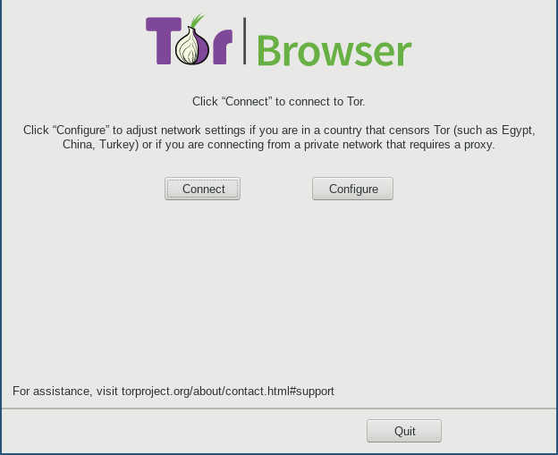
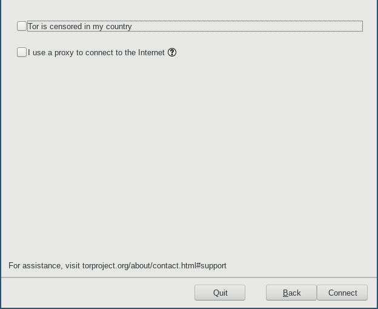
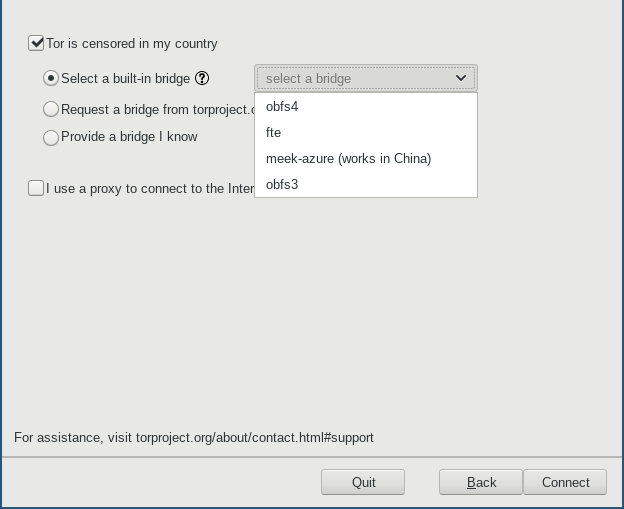
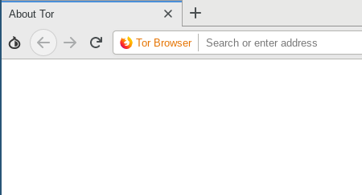
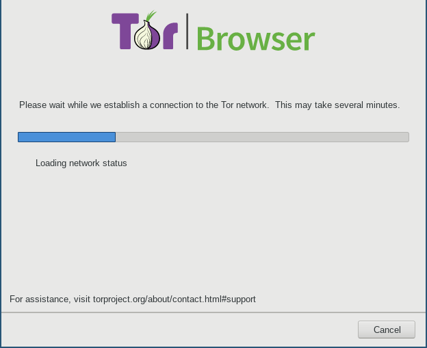
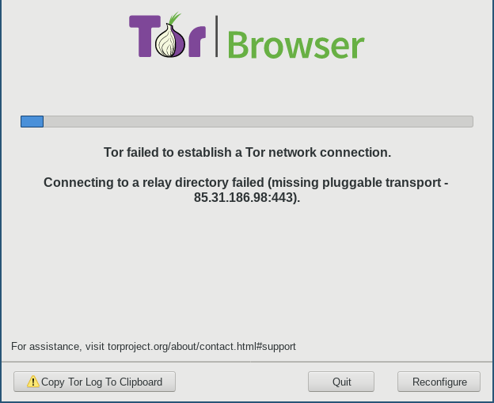

You're almost ready. Some minor configuration is all that stands between you and internet freedom.
Please read the instructions below to effectively circumvent school firewall.
1) To add a bridge, follow the instructions on screen. Click the
"Configure" button.

2) Because the school blocks or otherwise censors connections to the Tor Network, tick this checkbox.

3) Make sure that you are selecting a built-in bridge, and choose wither "obfs4" or "meek-azure". obfs4 is currently recommend, but depending on time and location, one may work better for you.

4) After you decide which bridges you want to use, click "Connect".
Tor should now be able to load successfully and the browser window
should appear.

Sometimes the bootstrapping gets stuck at some point, for example when
a bridge went offline or the connection is blocked.


Ideally, cancelling and reconnecting works after some tries, using a different bridge, or restarting the browser. If not, remove the Tor Browser folder and extract the archive again. It should work now.